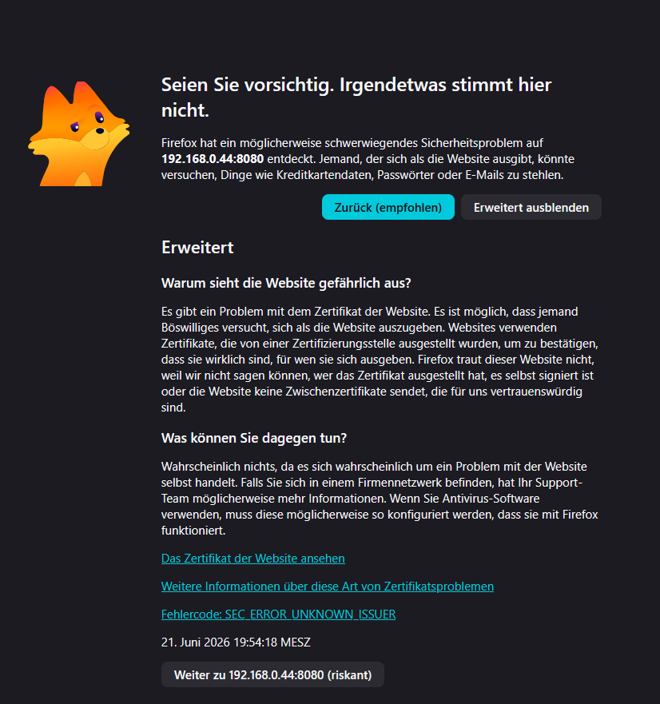
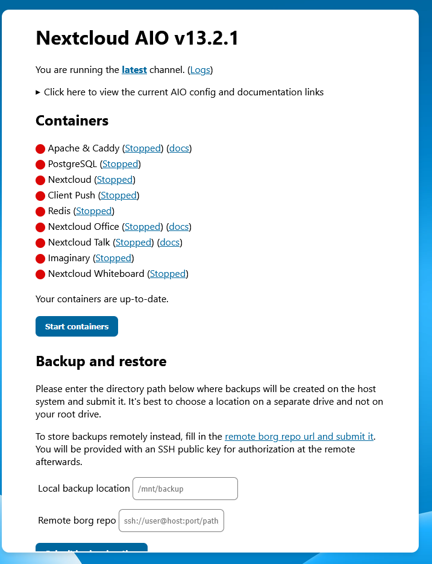

Achtung: Diese Anleitung ist noch nicht Vollständig und damit Unbrauchbar
Für den Hier Beschriebenen Weg Brauchst du ein kostenloses Konto bei Cloudflare und eine Domain. Diese Bekommst du bei Anbietern wie Netcup für 5€ im Jahr.
Schaue dir auf jeden Fall vorher die Cloudflare Tunnel Anleitung an!
🧩 1. Was ist Nextcloud AIO?
Nextcloud All‑in‑One (AIO) ist das offizielle Komplettpaket der Nextcloud‑Entwickler.Es bringt alle Dienste (Webserver, Datenbank, Redis, Backup‑Container usw.) in einer einzigen, perfekt abgestimmten Docker‑Umgebung mit.
Vorteile
- automatische Updates
- einfache Verwaltung über ein Web‑Interface
- keine manuelle Konfiguration von MariaDB, Redis oder Cron
🛠️ 1. Docker installieren
⚠️ Bitte überprüfe Befehle vor dem Ausführen. Ich übernehme keine Haftung.
sudo apt update
sudo apt install -y ca-certificates curl gnupg
sudo install -m 0755 -d /etc/apt/keyrings
curl -fsSL https://download.docker.com/linux/ubuntu/gpg | sudo gpg --dearmor -o /etc/apt/keyrings/docker.gpg
sudo chmod a+r /etc/apt/keyrings/docker.gpg
echo "deb [arch=$(dpkg --print-architecture) signed-by=/etc/apt/keyrings/docker.gpg] https://download.docker.com/linux/ubuntu $(. /etc/os-release && echo "$VERSION_CODENAME") stable" | sudo tee /etc/apt/sources.list.d/docker.list > /dev/null
sudo apt update
sudo apt install -y docker-ce docker-ce-cli containerd.io docker-buildx-plugin docker-compose-plugin
Testen
Teste einmal, ob die Installation erfolgreich war:
docker --version
Du solltest so eine Ähnliche Ausgabe bekommen:
Docker version 29.5.3, build d1c06ef
📁 2. Ordnerstruktur vorbereiten
Damit wenn du Später mal mehr Container hast, legen wir eine Saubere Struktur an, damit die die einzelnen compose Dateien einfacher wiederfindest.
Die Fer tige Strucktur wird dann so aussehen:
/Docker
└── /Nextcloud
└── compose.yaml
So erstellst du die Ordner:
mkdir -p ~/Docker/Nextcloud
☁️ 3. Nextcloud AIO Installation
Es gibt jetzt 2 methoden, entweder deine Späteren Cloud Daten liegen auf deinem Systemordner, oder auf einer anderen Platte:
🧱 1. Grundprinzip: Wie Nextcloud AIO Speicher nutzt
Nextcloud AIO kennt zwei Arten von Speicher:
Haupt‑Datenspeicher
→ wird über NEXTCLOUD_DATADIR gesetzt
→ enthält ALLE Benutzerdateien
→ muss VOR der Installation feststehen
Externe Speicher
→ werden später über das Plugin „External Storage Support“ eingebunden
→ erscheinen als Ordner in Nextcloud
→ können beliebig viele sein
🧩 2. Unterschiedliche Compose‑Varianten
Du hast drei Möglichkeiten:
🟦 Variante A – Externe Festplatte als Hauptspeicher (bei z.b einem Raspi empfohlen)
→ NEXTCLOUD_DATADIR zeigt direkt auf die Platte→ Nextcloud speichert ALLE deine Daten dort
→ Muss VOR dem ersten Start gesetzt werden
⚠️ Wenn du diesen Weg nutzen willst mache erst mit Schritt 3 weiter! Der Teil - NEXTCLOUD_DATADIR=/mnt/platte_1_1/nextcloud_data wird bei dir auch sicherlich anders heißen also pass auf!
Compose‑Datei:
services:
nextcloud-aio-mastercontainer:
image: nextcloud/all-in-one:latest
container_name: nextcloud-aio-mastercontainer
restart: unless-stopped
ports:
- "8080:8080"
environment:
- WATCHTOWER_DOCKER_SOCKET_PATH=/var/run/docker.sock
- NEXTCLOUD_DATADIR=/mnt/platte_1_1/nextcloud_data
- APACHE_PORT=11000
volumes:
- /var/run/docker.sock:/var/run/docker.sock:ro
- nextcloud_aio_mastercontainer:/mnt/docker-aio-config
volumes:
nextcloud_aio_mastercontainer:
name: nextcloud_aio_mastercontainer
🟩 Variante B – Keine Festplatte einbinden
→ NEXTCLOUD_DATADIR wird NICHT gesetzt→ Nextcloud speichert alles im Docker‑Volume
→ Einfachste Variante
Compose‑Datei:
services:
nextcloud-aio-mastercontainer:
image: nextcloud/all-in-one:latest
container_name: nextcloud-aio-mastercontainer
restart: unless-stopped
ports:
- "8080:8080"
environment:
- WATCHTOWER_DOCKER_SOCKET_PATH=/var/run/docker.sock
- SKIP_DOMAIN_VALIDATION=true
- APACHE_PORT=11000
volumes:
- /var/run/docker.sock:/var/run/docker.sock:ro
- nextcloud_aio_mastercontainer:/mnt/docker-aio-config
volumes:
nextcloud_aio_mastercontainer:
name: nextcloud_aio_mastercontainer
🟧 Variante C – Festplatte später über Plugin einbinden
→ NEXTCLOUD_DATADIR bleibt Standard→ Festplatte wird später als „External Storage“ eingebunden
→ Ideal für mehrere Platten oder NAS‑Mounts
Compose‑Datei:
⚠️ Bei den Volumes musst du schauen, wie es bei deinen Platten ist.
services:
nextcloud-aio-mastercontainer:
image: nextcloud/all-in-one:latest
container_name: nextcloud-aio-mastercontainer
restart: unless-stopped
ports:
- "8080:8080"
environment:
- WATCHTOWER_DOCKER_SOCKET_PATH=/var/run/docker.sock
- SKIP_DOMAIN_VALIDATION=true
- APACHE_PORT=11000
volumes:
- /var/run/docker.sock:/var/run/docker.sock:ro
- nextcloud_aio_mastercontainer:/mnt/docker-aio-config
# >>> WICHTIG: Externe Festplatten in den Container mounten <<<
# Jede Platte bekommt ihren eigenen Mount:
- /mnt/platte_1_1:/mnt/platte_1_1:rw
- /mnt/platte_2_1:/mnt/platte_2_1:rw
# Du kannst beliebig viele hinzufügen
volumes:
nextcloud_aio_mastercontainer:
name: nextcloud_aio_mastercontainer
⚠️ Jede Zeile Hinter den Rauten Entfernen
💽 3. Externe Festplatte korrekt mounten
Diesen Schritt brauchst du nur wenn du Variante A oder C nutzt. Wenn du Variante B nutzt kannst du diesen Schritt überspringen
Damit nextcloud auch auf deine Platte zugreifen kann, musst du sie erst einbinden!
1️⃣ Festplatte identifizieren
lsblk
Du wirst dann in etwa so was sehen:
NAME SIZE TYPE MOUNTPOINT
sda 500G disk
├─sda1 499G part /
sdb 1T disk
Suche nun deine Platte, das geht am besten anhand der Größe.
Wichtig:
sda → Systemplatte
sdb → neue Festplatte
⚠️ Wenn deine Platte nicht sdb heißt, mache hier AUF GAR KEINE FALL weiter, und hole dir Hilfe aus dem Internet!!
2. Partition erstellen
Partitionierungsprogramm öffnen:
sudo fdisk /dev/sdb
Danach solltest du in ein Fenster kommen.
Drücke da nacheinander:
n
p
1
ENTER
ENTER
w
Erklärung:
n → Neue Partition
p → Primär
1 → Partitionsnummer
ENTER → Standardwerte
w → Änderungen speichern
Danach neu einlesen:
sudo partprobe
Schau dann noch mal nach:
lsblk
Danach sollte die Partition da sein.
Beispiel bei mir:
NAME MAJ:MIN RM SIZE RO TYPE MOUNTPOINTS
loop0 7:0 0 2G 0 loop
sda 8:0 0 931.5G 0 disk
└─sda1 8:1 0 931.5G 0 part /mnt/platte_1_1
mmcblk0 179:0 0 238.4G 0 disk
├─mmcblk0p1 179:1 0 512M 0 part /boot/firmware
└─mmcblk0p2 179:2 0 237.9G 0 part /
zram0 254:0 0 2G 0 disk [SWAP]
3. Festplatte formatieren
⚠️ Achtung: Im folgenden Schritt werden alle Daten auf der Platte gelöscht. Ich übernehme keine Haftung falls was schief geht!!!
Ich empfehle hier ext4 zu nutzen:
sudo mkfs.ext4 /dev/sdb1
4. Mountpunkt erstellen
Im Folgen Schritt legen wir fest, worüber die Platte erreichbar sein soll.
Das ist auch der Pfad den ihr in die Compose eintragen müsst.
Ich empfehle die Platten wie folgt zu benennen: platte_(plattennummer (also warscheineich 1))_(plattengröße)
Also in meinem Beispiel:
sudo mkdir /mnt/platte_1_1
5. Festplatte mounten
Nun verknüpfen wir den Ordner mit der Platte:
sudo mount /dev/sdb1 /mnt/platte_1_1
Prüfen wir mal:
df -h
In meinem Beispiel:
6. Automatisch beim Start einbinden (fstab)
Nun kümmern wir uns, das die Platte bei jedem Serverstart automatisch eingebunden wird:
UUID Herausfinden
sudo blkid
Da dann nach sowas suchen:
/dev/sdb1: UUID="abc-123"
Die UUID merken oder Aufschreiben
Danach diese Datei öffnen:
sudo nano /etc/fstab
Dann nach ganz unten Scrollen und diese Zeile eingeben:
UUID=abc-123 /mnt/platte_1_1 ext4 defaults 0 2
Die UUID und den Pfad sollen natürlich so wie bei dir sein!
Danach Speichern:
STRG + O
ENTER
STRG + X
Danach Testen:
sudo mount -a
Wenn nichts kommt:
sudo reboot
Wenn was kommt: Fehler Googlen
🛫 4. Nextcloud Starten
Gehe jetzt in diesen Ordner:
cd /Docker/Nextcloud
Und erstelle eine neue Datei:
nano compose.yaml
Da fügst du jetzt die Für dich Passende Compose aus schritt 3 ein.
Danach Speichern:
STRG + O
ENTER
STRG + X
docker compose up -d
Bonus, wenn du magst kannst du jetzt einen Docker Verwalter wie Yacht nutzen!
⚙️ 5. Nextcloud Einrichten
Erstelle jetzt in deinem Cloudflare Dashboard eine neue Route, die auf port 11000 Zeigt.
Wenn du jetzt nur Bahnhof verstehst, les dir die Cloudflare Tunnel anleitung Durch!
Gehe jetzt in deinem Browser auf https://DEINE_IP:8080/

Wenn du sowas siehst, keine Sorge, Nextcloud ist auf Github, wenn jemand da böswillig ist hätte das jemand schon längst gefunden :)
⚠️ Die Angezeigten Wörter sicher dir doppelt und 3 fach!!
Trage die Wörter ein, und gebe im Nächten Fenster deine Domain ein

Nun kannst du ALle Container Starten. Das kann etwas dauern...

Während die Container starten kannst du deine Office anwendung wählen.
Ich empfehle Collabora Office.
Lade die Seite ein Paar mal neu, und dann kannst du erst Richtig Loslegen.